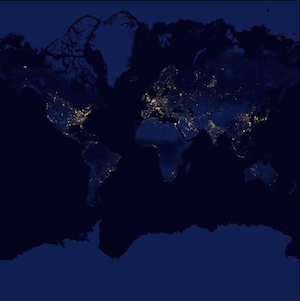

Access Basics
NASA's Global Imagery Browse Services (GIBS) visualizations are accessible through public standards-compliant web services, hosted on the https://gibs.earthdata.nasa.gov domain. Each service is accessed through service endpoints specific to the service and map projection. Visualizations within these services are available in pre-determined resolutions. For a full list of available visualizations, see the Visualization Product Catalog.
The information on this page covers the following topics related to accessing GIBS visualizations:
Visualization Services
NASA's Global Imagery Browse Services (GIBS) provides visualizations through the APIs/services listed below. The following sections provide an overview of each visualization service, service endpoints, and reference clients that support the service.
- OGC Web Map Tile Service (WMTS)
- OGC Web Map Service (WMS)
- Tiled Web Map Service (TWMS)
- Generic XYZ Tile Service (TMS)
Note
In the following content, service endpoints for the "Best Available" (See Best Available Layers) are provided. For example: https://gibs.earthdata.nasa.gov/wmts/epsg4326/best/. However, the following endpoints also exist and may be accessed by simply replacing the best component of the provided service endpoints:
- std - Standard-/science-quality visualizations only
- nrt - Near real-time visualizations only
- all - All best available, standard-/science-quality, and near real-time visualizations
OGC Web Map Tile Service (WMTS)
Overview
The Open Geospatial Consortium (OGC) Web Map Tile Service (WMTS) provides a way for clients to retrieve tiled mapping data in a standardized manner, handling product-specific details such as available number of zoom levels, map projections, image formats, tile sizes, etc. The WMTS specification provides guidance for three methods of tile retrieval: Key-Value Pair (KVP), REpresentational State Transfer (REST), and Simple Object Access Protocol (SOAP). GIBS supports the KVP and REST access methods.
WMTS requests utilize the following URI/query-string elements.
- LayerIdentifier - Unique identifier for a visualization within a specific service endpoint
- Time - An optional dimension whereby visualizations are separated by data day (i.e. YYYY-MM-DD) or data data/time (i.e. YYYY-MM-DDTHH:MI:SSZ).
- See Time Dimension for additional details.
- TileMatrixSet - The identifier for the Tile Matrix Set that the visualization utilizes
- TileMatrix - The tile zoom level (0..N) for the requested tile; Min/Max are dictated by the Tile Matrix
- TileRow - The tile row (0..N) for the requested tile; Min/Max are dictated by the Tile Matrix
- TileCol - The tile column (0..N) for the requested tile; Min/Max are dictated by the Tile Matrix
- FormatExt/FormatMime - The format extension or mime-type of the visualization
The above elements may be found in examples of both RESTful and KVP access patterns seen below:
- REST
- Pattern - https://gibs.earthdata.nasa.gov/wmts/epsg4326/best/{LayerIdentifier}/default/{Time}/{TileMatrixSet}/{TileMatrix}/{TileRow}/{TileCol}.{FormatExt}
- Example - https://gibs.earthdata.nasa.gov/wmts/epsg4326/best/MODIS_Terra_CorrectedReflectance_TrueColor/default/2012-07-09/250m/6/13/36.jpg
- KVP
- Pattern - https://gibs.earthdata.nasa.gov/wmts/epsg4326/best/wmts.cgi?SERVICE=WMTS&REQUEST=GetTile&VERSION=1.0.0&LAYER={LayerIdentifier}&STYLE=&TIME={Time}&TILEMATRIXSET={TileMatrixSet}&TILEMATRIX={TileMatrix}&TILEROW={TileRow}&TILECOL={TileCol}&FORMAT={FormatMime}
- Example - https://gibs.earthdata.nasa.gov/wmts/epsg4326/best/wmts.cgi?Service=WMTS&Request=GetTile&Version=1.0.0 &layer=MODIS_Terra_CorrectedReflectance_TrueColor&tilematrixset=250m&TileMatrix=6&TileCol=36&TileRow=13&style=default&TIME=2012-07-09&Format=image%2Fjpeg
Service Endpoints
The following table contains the root service endpoint for each GIBS-supported map projection along with sample requests for the WMTS GetCapabilities, GetTile, and DescribeDomains requests via both RESTful and KVP access methods. See Time Dimension for additional details on DescribeDomains.
| Projection | Endpoint Root | GetCapabilities | GetTile | DescribeDomains |
|---|---|---|---|---|
| Geographic (EPSG:4326) | REST: https://gibs.earthdata.nasa.gov/wmts/epsg4326/best/ KVP: https://gibs.earthdata.nasa.gov/wmts/epsg4326/best/wmts.cgi? |
REST / KVP | REST / KVP | REST / KVP |
| NSIDC Sea Ice Polar Stereographic North (EPSG:3413) | REST: https://gibs.earthdata.nasa.gov/wmts/epsg3413/best/ KVP: https://gibs.earthdata.nasa.gov/wmts/epsg3413/best/wmts.cgi? |
REST / KVP | REST / KVP | REST / KVP |
| Antarctic Polar Stereographic / WGS 84 (EPSG:3031) | REST: https://gibs.earthdata.nasa.gov/wmts/epsg3031/best/ KVP: https://gibs.earthdata.nasa.gov/wmts/epsg3031/best/wmts.cgi? |
REST / KVP | REST / KVP | REST / KVP |
| Web Mercator - (EPSG:3857) | REST: https://gibs.earthdata.nasa.gov/wmts/epsg3857/best/ KVP: https://gibs.earthdata.nasa.gov/wmts/epsg3857/best/wmts.cgi? |
REST / KVP | REST / KVP | REST / KVP |
Example Clients
The following clients support the GIBS WMTS visualization services:
OGC Web Map Service (WMS)
Overview
The Open Geospatial Consortium (OGC) Web Map Service (WMS) provides a way for clients to receive a customized response (e.g. raster image) based on request parameters such as a custom bounding box, dimensions, layer(s) and format. Unlike the rigidity enforced through tiled interfaces (e.g. WMTS and TWMS), WMS responses are more flexible and may contain multiple composited layers in a single output. Two WMS specifications are currently available and supported by GIBS: 1.1.1 and 1.3.0. Both WMS specifications support a single method of image retrieval, Key-Value Pair (KVP).
Service Endpoints
The following table contains the root service endpoint for each GIBS-supported map projection along with sample requests for the WMS GetCapabilities and GetMap requests using both 1.1.1 and 1.3.0 WMS specification versions.
| Projection | Endpoint Root | GetCapabilities | GetMap |
|---|---|---|---|
| Geographic (EPSG:4326) | https://gibs.earthdata.nasa.gov/wms/epsg4326/best/wms.cgi? | 1.1.1 / 1.3.0 | 1.1.1 / 1.3.0 |
| NSIDC Sea Ice Polar Stereographic North (EPSG:3413) | https://gibs.earthdata.nasa.gov/wms/epsg3413/best/wms.cgi? | 1.1.1 / 1.3.0 | 1.1.1 / 1.3.0 |
| Antarctic Polar Stereographic / WGS 84 (EPSG:3031) | https://gibs.earthdata.nasa.gov/wms/epsg3031/best/wms.cgi? | 1.1.1 / 1.3.0 | 1.1.1 / 1.3.0 |
| Web Mercator - EPSG:3857 | https://gibs.earthdata.nasa.gov/wms/epsg3857/best/wms.cgi? | 1.1.1 / 1.3.0 | 1.1.1 / 1.3.0 |
Example Clients
The following clients support the GIBS WMS visualization services:
Tiled Web Map Service (TWMS)
Overview
Tiled WMS offers fast response to a limited number of WMS access patterns - specifically those access patterns which provide geographic bounds which fall along the edges of pregenerated tiles.
Those patterns are described in the TWMS GetTileService request. The response is an XML encoded list of available WMS access patterns. A TiledPattern access pattern is a set gridded WMS requests, where parameter order, case and content are constant, with the exception of the bounding box (bbox) values. Using this pattern allows fast access to tiles for a given combination of layers and associated styles at a given resolution over a defined area. All the information about a pattern can be extracted form the provided WMS call, using these rules:
- Server prefix is defined in the OnlineResource tag
- Area covered is defined in the LatLonBoundingBox
- Tile size is provided by the width and height parameters values
- Tile format is provided by the format parameter value
- Tile coverage can be computed as (Lon1-Lon0) and (Lat1-Lat0), where Lon1,Lon0,Lat1 and Lat0 are the arguments of the bbox parameter.
- The Grid alignment results from the bbox argument and the tile coverage.
- The bbox argument values provided in the pattern are for the top-left tile, the other tile locations can be computed based on the tile coverage.
- Other metadata that might be of interest to a user is contained in the Name, Title and Abstract tags.
- Multiple WMS patterns in a single TilePattern are equivalent.
- TilePattern tags that have something in common are grouped in a hierarchical structure build using TiledGroup tags.
- The innermost level refers to the same exact data, possible differences being the image size, image format, resolution, and alignment.
- Higher level TiledGroup are used to group together related datasets.
A client application is expected to request this information only if it is defined as a request in the WMS server Capabilities. Once obtained, the application needs to analyze the patterns, decide which ones can be used and then issue only WMS requests that match the pattern to the normal WMS server, requests that can be built by modifying the bbox argument in a TiledPattern and prefixing the resulting string with the content of the OnlineResource tag.
Service Endpoints
The following table contains the root service endpoint for each GIBS-supported map projection along with sample requests for the TWMS GetCapabilities, GetTileService, and GetMap requests.
| Projection | Endpoint Root | GetCapabilities | GetTileService | GetMap |
|---|---|---|---|---|
| Geographic (EPSG:4326) | https://gibs.earthdata.nasa.gov/twms/epsg4326/best/ | KVP | KVP | KVP |
| NSIDC Sea Ice Polar Stereographic North (EPSG:3413) | https://gibs.earthdata.nasa.gov/twms/epsg3413/best/ | KVP | KVP | KVP |
| Antarctic Polar Stereographic / WGS 84 (EPSG:3031) | https://gibs.earthdata.nasa.gov/twms/epsg3031/best/ | KVP | KVP | KVP |
| Web Mercator - (EPSG:3857) | https://gibs.earthdata.nasa.gov/twms/epsg3857/best/ | KVP | KVP | KVP |
Example Clients
The following clients support the GIBS TWMS visualization services:
Generic XYZ Tile Access (TMS)
The WMTS RESTful interface above can be easily adapted for use as a "generic" XYZ tile server if the developer pre-populates all of the required fields except the tile row, column, and zoom level. For example, by starting with the most generalized GIBS API request:
https://gibs.earthdata.nasa.gov/wmts/epsg{*EPSG:Code*}/best/{*LayerIdentifier*}/default/{*Time*}/{*TileMatrixSet*}/{*ZoomLevel*}/{*TileRow*}/{*TileCol*}.png
Populating the fields with the desired map projection, product, time, etc (Terra/MODIS Aerosol Optical depth from 2014/04/09, in this case), GIBS products can be used by clients such as ESRI's ArcGIS Online to add a "Tile Layer" by leaving the row, column, and zoom level as parameters:
https://gibs.earthdata.nasa.gov/wmts/epsg3857/best/MODIS_Terra_Aerosol/default/2014-04-09/GoogleMapsCompatible_Level6/{level}/{row}/{col}.png
Map Projections
GIBS visualizations are available in one or more of the following map projections, as is appropriate for the data being visualized. Consider the following guidelines when accessing visualizations through the GIBS web services:
- A visualization available in multiple projections has the same identifier.
- A visualization available in one or more of the EPSG:4326, EPSG:3413, and EPSG:3031 projections has the same WMTS TileMatrixSet.
- Exception: If the
2kmTileMatrixSet is utilized in the EPSG:4326 projection, the1kmTileMatrix set will be utilized in polar projections.
- Exception: If the
- A visualization available in the EPSG:4326 projection is also available in the EPSG:3857 projection.
- Exception: Some utility visualizations (e.g. coastlines, land mask) may not be available in the EPSG:3857 projection.
| Projection | EPSG Code | Spatial Extents | Example |
|---|---|---|---|
| WGS 84 / Geographic | 4326 | WGS84 Coordinates Lower Left: -180,-90 Upper Right: 180,90 |
|
| NSIDC Sea Ice Polar Stereographic North | 3413 | Native Coordinates Lower Left: -4194304,-4194304 Upper Right: 4194304,4194304 WGS84 Coordinates Lower Left: -180, 38.807151 Upper Right: 180,90 |
|
| Antarctic Polar Stereographic / WGS 84 | 3031 | Native Coordinates Lower Left: -4194304,-4194304 Upper Right: 4194304,4194304 WGS84 Coordinates Lower Left: -180, -90 Upper Right: 180,-38.941373** |
|
| Web Mercator / "Google Projection" | 3857 | Native Coordinates Lower Left: -20037508.34278925,-20037508.34278925 Upper Right: 20037508.34278925,20037508.34278925 WGS84 Coordinates Lower Left: -180,-85.051129 Upper Right: 180,85.051129 |
 |
Note
The spatial extents of the GIBS Geographic and Web Mercator projections match the full extents of the official projection definition. However, the GIBS spatial extents of the north and south polar projections are a subset of the official projection's extents. The GIBS' extents were selected to a) cover the main land/ice masses at each pole and b) to facilitate a "power of two" extent expansion between zoom levels as required for tiled access. See here for more on GIBS tiled access resolutions.
Time Dimension
The core concept within the GetCapabilities response is a map layer. GIBS map layers represent data that change over time, most commonly providing a different map each day. Therefore, the layer definition within the GIBS GetCapabilities response must present a time dimension.
Note
When requesting a visualization for the current date, much of the world may be empty if data acquisition and processing has not yet occurred.
OGC Web Map Tile Service (WMTS)
GIBS WMTS services support the following custom time dimension on each time-varying visualization.
<Dimension>
<ows:Identifier>time</ows:Identifier>
<UOM>ISO8601</UOM>
<Default>2013-05-29</Default>
<Current>false</Current>
<Value>2012-05-08/2013-05-29/P1D</Value>
</Dimension>
Elements of the Dimension data structure are prescribed in the WMTS 1.0.0 spec (Table 9, p. 22). However, since the WMTS spec doesn't address the time dimension, we are adapting some aspects of the WMS specification regarding the time dimension, specifically:
- The contents of the
<UOM>part match the contents of the "units=" attribute in the WMS<Dimension>element. - The contents of the
<Value>part match the contents of the WMS<Extent>element.
Visualizations that represent "subdaily" (e.g. period < 1 day) require that the time dimension value be provided with a YYYY-MM-DDTHH:MI:SSZ format. All other visualizations also support a simplified YYYY-MM-DD formatted value with an implied 00:00:00Z.
If the time dimension is omitted in the WMTS request, GIBS will return tiles for the default date, as specified in the <Default> tag. Note that GIBS' imagery layers all have a value of false in the <Current> tag which means that the special current keyword cannot be provided as the time value. However, GIBS does support use of the special default value, which results in the same response as though the date were omitted.
DescribeDomains
To maintain a manageable size of the GetCapabilities document, the Dimension data structure in the WMTS GetCapabilities will display only the latest 100 time periods for each layer. To obtain all time periods for a layer, GIBS WMTS also supports the proposed DescribeDomains request as proposed by the OGC Testbed-12 WMS/WMTS Enhanced Engineering Report.
DescribeDomains requests utilize the following URI/query-string elements.
- LayerIdentifier - Unique identifier for a visualization within a specific service endpoint
- Time - An optional parameter to only request periods that occur within an inclusive domain bounded by a specified
StartDatetimeandEndDatetime.- For REST requests, this parameter should take the form of
StartDatetime--EndDatetime. - For KVP requests, this parameter should take the form of
StartDatetime/EndDatetime. - If only one datetime is specified without the delimiter
--or/, or is followed by the delimiter (i.e.StartDatetime--orStartDatetime/), then the specified datetime will be treated as aStartDatetimewith an unboundedEndDatetime. - If only one datetime is specified and is preceeded by
--for REST requests or/for KVP requests (i.e.--EndDatetimeor/EndDatetime), then the specified datetime will be treated as anEndDatetimewith an unboundedStartDatetime. - Not specifying a Time parameter or specifying
allwill return all available periods for the layer.
- For REST requests, this parameter should take the form of
- BBox - A parameter to specify the bounding box to be used. All layers have the same extent in GIBS, so this option has no effect on the returned result. Also accepts
all. - TileMatrixSet - The identifier for the Tile Matrix Set that the visualization utilizes
The above elements may be found in examples of both RESTful and KVP access patterns seen below:
- REST
- Pattern - https://gibs.earthdata.nasa.gov/wmts/epsg4326/best/{LayerIdentifier}/default/{TileMatrixSet}/{BBox}/{Time}.xml
- Example - https://gibs.earthdata.nasa.gov/wmts/epsg4326/best/1.0.0/MODIS_Terra_CorrectedReflectance_TrueColor/default/250m/all/2015-01-26--2022-11-03.xml
- KVP
- Pattern - https://gibs.earthdata.nasa.gov/wmts/epsg4326/best/wmts.cgi?SERVICE=WMTS&REQUEST=DescribeDomains&VERSION=1.0.0&LAYER={LayerIdentifier}&TILEMATRIXSET={TileMatrixSet}&TIME={Time}
- Example - https://gibs.earthdata.nasa.gov/wmts/epsg4326/best/wmts.cgi?Service=WMTS&Request=DescribeDomains&Version=1.0.0&layer=MODIS_Terra_CorrectedReflectance_TrueColor&tilematrixset=250m&TIME=2015-01-26/2022-11-03
Time information can be found in the DimensionDomain element of the returned XML document:
<DimensionDomain>
<ows:Identifier>time</ows:Identifier>
<Domain>2018-05-26/2018-11-03/P1D,2019-08-23/2021-09-03/P1D</Domain>
<Size>2</Size>
</DimensionDomain>
The <Domain> element will contain a comma-separated list of time periods. The <Size> element will contain an integer corresponding to the number of time periods in the <Domain> element.
OGC Web Map Service (WMS)
GIBS WMS services support a time dimension on each time-varying visualization, as is displayed below according the respective OGC WMS specification:
WMS v1.1.1
<Dimension name="time" units="ISO8601"/>
<Extent name="time" default="2018-11-14" nearestValue="1">2013-07-16/2018-11-14/P1D</Extent>
WMS v1.3.0
<Dimension name="time" units="ISO8601" default="2018-10-01" nearestValue="1">2002-09-01/2018-10-
/P1M</Dimension>
Visualizations that represent "subdaily" (e.g. period < 1 day) require that the time dimension value be provided with a YYYY-MM-DDTHH:MI:SSZ format. All other visualizations also support a simplified YYYY-MM-DD formatted value with an implied 00:00:00Z.
If the time dimension is omitted in the WMS request, GIBS will return tiles for the default date, as specified in the default attribute. Note that GIBS' imagery layers all have a value of 1 in the nearestValue tag indicating that GIBS will snap to the nearest time value within the specified dimension extents. Additionally, GIBS supports use of the special default value, which results in the same response as though the date were omitted.
Tiled Web Map Service (TWMS)
GIBS TWMS services support a time dimension on each time-varying visualization, as is defined in the TWMS GetTileService document as the following:
<Key>${time}</Key>
Visualizations that represent "subdaily" (e.g. period < 1 day) require that the time dimension value be provided with a YYYY-MM-DDTHH:MI:SSZ format. All other visualizations also support a simplified YYYY-MM-DD formatted value with an implied 00:00:00Z.
See WMS above